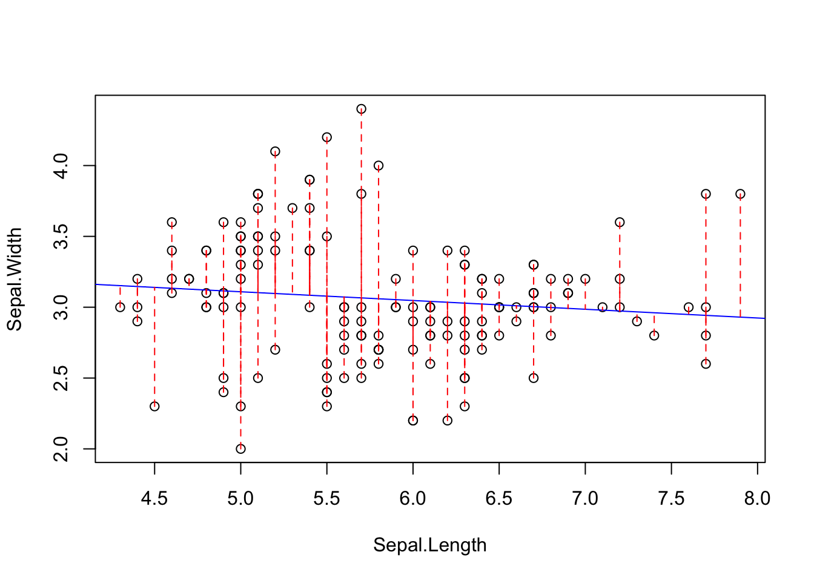
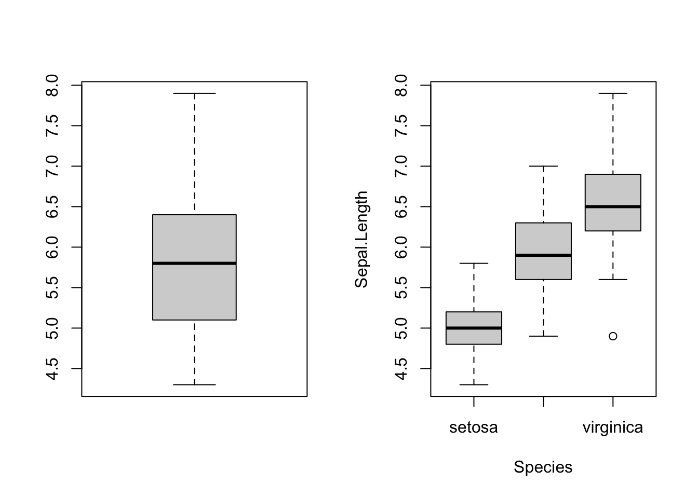
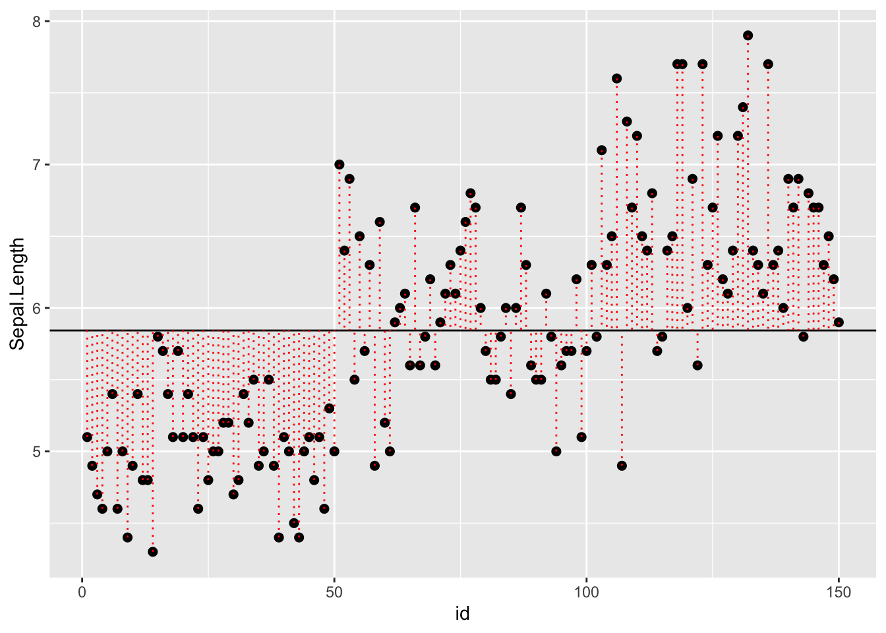
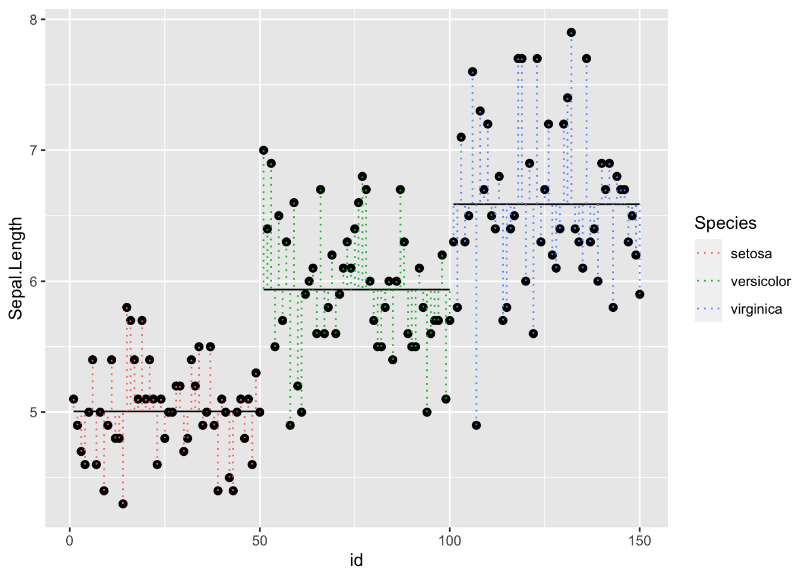
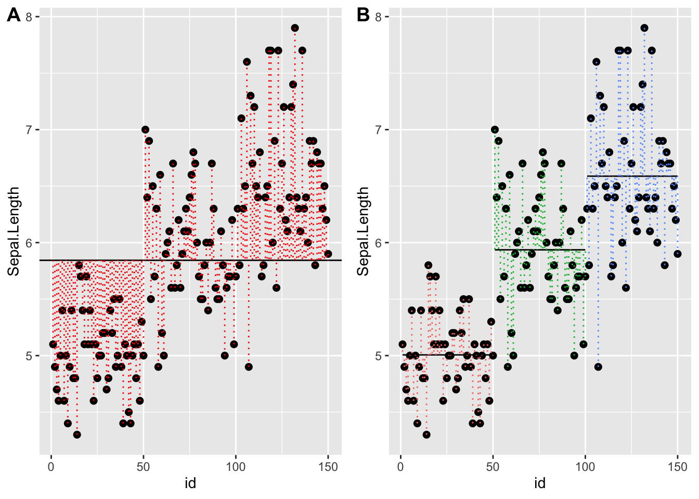

with(iris, plot(Sepal.Width ~ Sepal.Length))
lm.fit <- with(iris, lm(Sepal.Width ~ Sepal.Length))
abline(lm.fit, col="blue")
At the end of this lesson you will:
A small review of the linear regression and ANOVA
Linear regression asks whether there is a relationship between X and Y, that is if you know X can you predict the value of Y?
with(iris, plot(Sepal.Width ~ Sepal.Length))
lm.fit <- with(iris, lm(Sepal.Width ~ Sepal.Length))
abline(lm.fit, col="blue")
Linear regression results in two parameters, the best-fit slope and intercept:
lm.fit
Call:
lm(formula = Sepal.Width ~ Sepal.Length)
Coefficients:
(Intercept) Sepal.Length
3.41895 -0.06188 summary(lm.fit)
Call:
lm(formula = Sepal.Width ~ Sepal.Length)
Residuals:
Min 1Q Median 3Q Max
-1.1095 -0.2454 -0.0167 0.2763 1.3338
Coefficients:
Estimate Std. Error t value Pr(>|t|)
(Intercept) 3.41895 0.25356 13.48 <2e-16 ***
Sepal.Length -0.06188 0.04297 -1.44 0.152
---
Signif. codes: 0 '***' 0.001 '**' 0.01 '*' 0.05 '.' 0.1 ' ' 1
Residual standard error: 0.4343 on 148 degrees of freedom
Multiple R-squared: 0.01382, Adjusted R-squared: 0.007159
F-statistic: 2.074 on 1 and 148 DF, p-value: 0.1519Regression minimizes the sum of squared errors (or deviations) from the line. The “errors” are the difference between where Y is, and where Y should be if it followed a perfect line.
We can illustrate what this means:
x <- iris$Sepal.Length
y <- iris$Sepal.Width
yhat <- predict(lm.fit)
with(iris, plot(Sepal.Width ~ Sepal.Length))
with(iris, abline(lm.fit, col="blue"))
for(i in 1:length(x)) lines(x[c(i,i)],c(y[i], yhat[i]), col="red", lty=2)
The regression line is the best fit line that minimizes the sums of squared deviations from the regression. It turns out that the least-squares fit of the regression line is also provides the Maximum Likelihood fits of the parameters of the line (the slope and intercept).
Analysis of variance is very closely related to regression. It also works by minimizing sums of squares, but it asks a different question.
Does the data better fit a model with one group (one regression line?) or multiple groups (multiple regression lines, one for each group)?
Graphically, it looks like the plot below with the question Is the data explained better by a single group with a grand mean? or with separate means for each Species?
par(mfrow=c(1,2))
with(iris, boxplot(Sepal.Length))
with(iris, plot(Sepal.Length ~ Species))
Statistically, this is asking whether the sums of squares is minimized by assuming there is only one group (one mean)? Or three groups?
For this plot we will add an index column (1 to number of observations), and use ggplot2, dplyr, and the pipe from magrittr
require(dplyr)
require(magrittr)
require(ggplot2)
dat <- cbind(iris, id = 1:length(iris$Species))
yhat <- mean(iris$Sepal.Length) # grand mean of Sepal Length
p <- dat %>% ggplot(aes( x = id, y = Sepal.Length, group=Species))
q <- p + geom_point( size=2) +
geom_hline( aes(yintercept = mean(iris$Sepal.Length)) ) +
geom_segment( data=dat, aes( x = id, y = Sepal.Length, xend = id, yend = yhat), color="red", lty = 3)
q 
We added two new ggplot2 functions:
abline()segment() function)To add in the group structure, we need to compute means by species, and know where one species ends and the other begins in the data vector. We can do this with group_by() and summarize():
spmeans <- dat %>% group_by(Species) %>%
summarise(
sl = mean(Sepal.Length),
n = length(Sepal.Length),
minid = min(id),
maxid = max(id)
)
spmeans# A tibble: 3 × 5
Species sl n minid maxid
<fct> <dbl> <int> <int> <int>
1 setosa 5.01 50 1 50
2 versicolor 5.94 50 51 100
3 virginica 6.59 50 101 150(You should always check that minid and maxid is what you intended)
We want to include this mean information in the dataframe, so to add it as a vector, we can merge():
dat <- merge(dat, spmeans)
head(dat) Species Sepal.Length Sepal.Width Petal.Length Petal.Width id sl n minid
1 setosa 5.1 3.5 1.4 0.2 1 5.006 50 1
2 setosa 4.9 3.0 1.4 0.2 2 5.006 50 1
3 setosa 4.7 3.2 1.3 0.2 3 5.006 50 1
4 setosa 4.6 3.1 1.5 0.2 4 5.006 50 1
5 setosa 5.0 3.6 1.4 0.2 5 5.006 50 1
6 setosa 5.4 3.9 1.7 0.4 6 5.006 50 1
maxid
1 50
2 50
3 50
4 50
5 50
6 50dat[45:55,] Species Sepal.Length Sepal.Width Petal.Length Petal.Width id sl n
45 setosa 5.1 3.8 1.9 0.4 45 5.006 50
46 setosa 4.8 3.0 1.4 0.3 46 5.006 50
47 setosa 5.1 3.8 1.6 0.2 47 5.006 50
48 setosa 4.6 3.2 1.4 0.2 48 5.006 50
49 setosa 5.3 3.7 1.5 0.2 49 5.006 50
50 setosa 5.0 3.3 1.4 0.2 50 5.006 50
51 versicolor 7.0 3.2 4.7 1.4 51 5.936 50
52 versicolor 6.4 3.2 4.5 1.5 52 5.936 50
53 versicolor 6.9 3.1 4.9 1.5 53 5.936 50
54 versicolor 5.5 2.3 4.0 1.3 54 5.936 50
55 versicolor 6.5 2.8 4.6 1.5 55 5.936 50
minid maxid
45 1 50
46 1 50
47 1 50
48 1 50
49 1 50
50 1 50
51 51 100
52 51 100
53 51 100
54 51 100
55 51 100tail(dat) Species Sepal.Length Sepal.Width Petal.Length Petal.Width id sl n
145 virginica 6.7 3.3 5.7 2.5 145 6.588 50
146 virginica 6.7 3.0 5.2 2.3 146 6.588 50
147 virginica 6.3 2.5 5.0 1.9 147 6.588 50
148 virginica 6.5 3.0 5.2 2.0 148 6.588 50
149 virginica 6.2 3.4 5.4 2.3 149 6.588 50
150 virginica 5.9 3.0 5.1 1.8 150 6.588 50
minid maxid
145 101 150
146 101 150
147 101 150
148 101 150
149 101 150
150 101 150Now that we have our dataframe with all of the necessary information, we can plot.
Note that there are two calls to geom_segment(). For the first, we are plotting the species means, so we use the smmeans dataset. For the second, we are plotting each pointʻs deviation from the species means so we use the full dataset. The rest is telling the function where the start and end points of each segment are:
r <- p + geom_point( size=2) +
geom_segment( data=spmeans, aes(x=minid, y = sl, xend=maxid, yend=sl, group=Species )) +
geom_segment( data=dat, aes( x = id, y = Sepal.Length, xend = id, yend = sl, color=Species), lty = 3)
r 
Back to our question - is the error sum of squares minimized by accouting for separate species or considering all irises as one group? Another way to state ANOVA is - is at least one of these groups different than the others?
require(cowplot)Loading required package: cowplotplot_grid(
q,
r + theme(legend.position="none"),
labels="AUTO")
If we want to know whether species are different in sepal length, then we need to have lm fit the model by species. We do this like so:
lm.fit <- with(iris, lm(Sepal.Length ~ Species))
summary(lm.fit)
Call:
lm(formula = Sepal.Length ~ Species)
Residuals:
Min 1Q Median 3Q Max
-1.6880 -0.3285 -0.0060 0.3120 1.3120
Coefficients:
Estimate Std. Error t value Pr(>|t|)
(Intercept) 5.0060 0.0728 68.762 < 2e-16 ***
Speciesversicolor 0.9300 0.1030 9.033 8.77e-16 ***
Speciesvirginica 1.5820 0.1030 15.366 < 2e-16 ***
---
Signif. codes: 0 '***' 0.001 '**' 0.01 '*' 0.05 '.' 0.1 ' ' 1
Residual standard error: 0.5148 on 147 degrees of freedom
Multiple R-squared: 0.6187, Adjusted R-squared: 0.6135
F-statistic: 119.3 on 2 and 147 DF, p-value: < 2.2e-16Interpretation: One-way ANOVA is like fitting a regression of the individual points against the grand mean of the points vs. separate regressions for each group. The summary shows that the the intercept (the mean of setosa) is about 5 (significantly different than zero), whereas the other species are contrasts against setosa, the first species. Versicolor is 0.93 higher than setosa, and virginica is 1.58 higher than setosa. Both of these contrasts are signficant. So they are actually all significantly different than each other
Notice that now have more parameters estimated. You can specify which parameter values and contrasts you want displayed. Often we just want an ANOVA table, which tests the hypothesis that at least one group is different than the others:
anova(lm.fit)Analysis of Variance Table
Response: Sepal.Length
Df Sum Sq Mean Sq F value Pr(>F)
Species 2 63.212 31.606 119.26 < 2.2e-16 ***
Residuals 147 38.956 0.265
---
Signif. codes: 0 '***' 0.001 '**' 0.01 '*' 0.05 '.' 0.1 ' ' 1We can see that species are significantly different in sepal length. Can you make a plot that shows this and add the statistics to it?
And thatʻs how ANOVA is related to regression!
There are many forms of regession and ANOVA. For example, if you want to see if the relationship between Sepal.Length and Sepal.Width differs by species, you woul do an ANCOVA (analysis of covariance):
lm.fit <- with(iris, lm(Sepal.Width ~ Sepal.Length + Species))
summary(lm.fit)
Call:
lm(formula = Sepal.Width ~ Sepal.Length + Species)
Residuals:
Min 1Q Median 3Q Max
-0.95096 -0.16522 0.00171 0.18416 0.72918
Coefficients:
Estimate Std. Error t value Pr(>|t|)
(Intercept) 1.67650 0.23536 7.123 4.46e-11 ***
Sepal.Length 0.34988 0.04630 7.557 4.19e-12 ***
Speciesversicolor -0.98339 0.07207 -13.644 < 2e-16 ***
Speciesvirginica -1.00751 0.09331 -10.798 < 2e-16 ***
---
Signif. codes: 0 '***' 0.001 '**' 0.01 '*' 0.05 '.' 0.1 ' ' 1
Residual standard error: 0.289 on 146 degrees of freedom
Multiple R-squared: 0.5693, Adjusted R-squared: 0.5604
F-statistic: 64.32 on 3 and 146 DF, p-value: < 2.2e-16Which would fit separate Y-intercepts for each species.